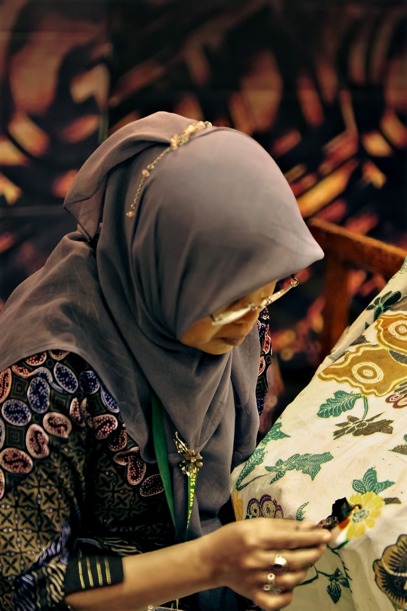
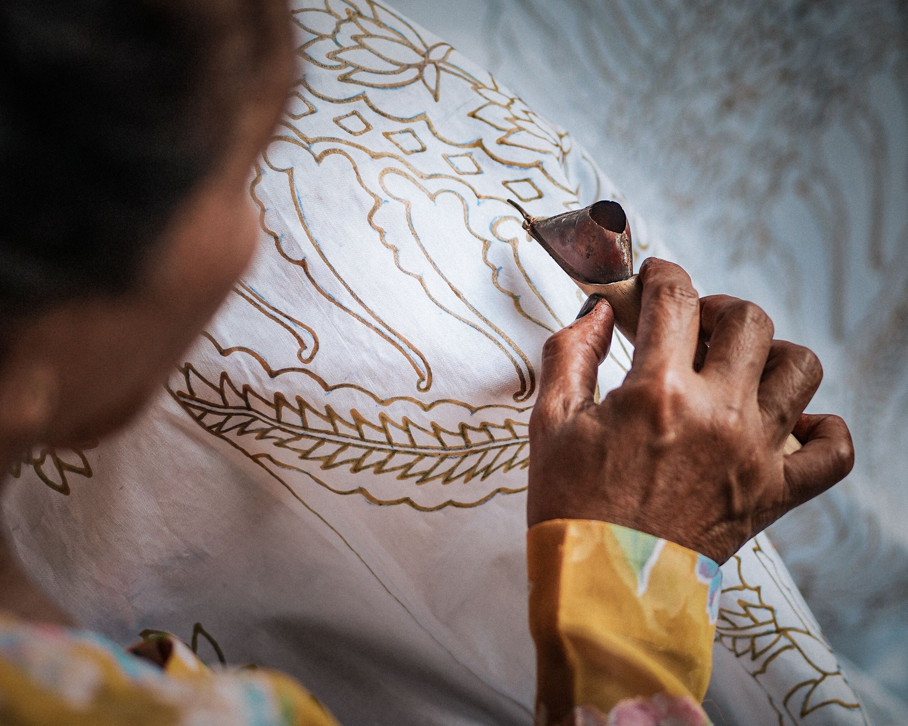
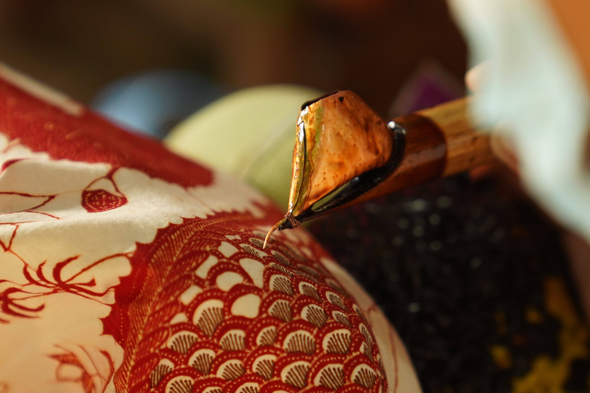
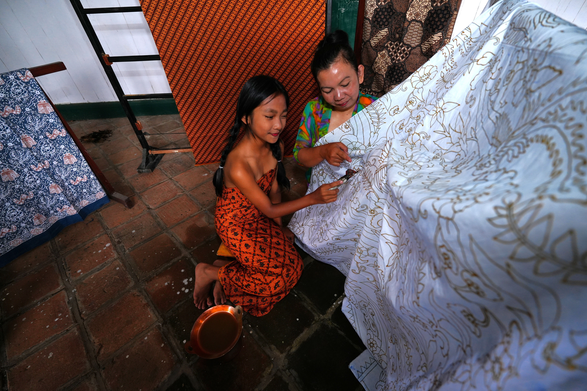
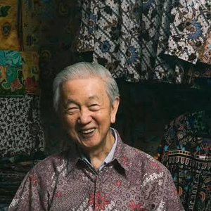
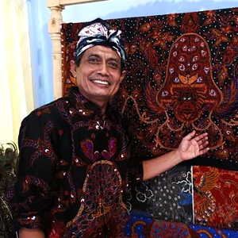
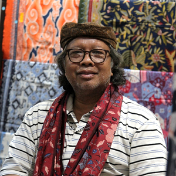

Keindahan Batik Khas Jawa Timur, Warisan Budaya Yang Terinspirasi dari kekayaan alam dan identitas daerah.
Lihat KoleksiTumbas Batik merupakan website Yang hadir untuk memperkenalkan Keindahan dan kekayaan batik indonesia, khususnya Batik khas Jawa Timur yang menjadi salah satu identitas budaya .
Terinspirasi dari kekayaan alam Jawa Timur, Batik ini menghadirkan motif Khas yang memiliki nilai keindahan dan makna tersendiri.
Melalui Tumbas Batik, kami ingin memperkenalkan warisan budaya Batik kepada masyarakat luas sekaligus menumbuhkah rasa cinta terhadap budaya lokal indonesia.
Pelajari Lebih LanjutMengenal lebih dekat keindahan khas Jember




Temukan jawaban seputar Batik khas Jember.
CERITA PECINTA BATIK
Setiap motif menyimpan cerita, setiap kain menghadirkan keindahan

"Motif batiknya sangat unik terutama sentuhan tembakaunya. Terlihat elegan dan memiliki nilai yang sangat tinggi ."

"Saya suka dengan keindahan motif Batik Labako. Perpaduan warnanya membuat kain Ini terlihat menarik dan penuh makna."

"Batik khas Jember memang istimewa. Motif alam dan daun tembakaunya menjadi daya tarik bagi berbagai pembeli di berbagai daerah."
JEMBER, INDONEISA
Pusat informasi dan pengenalan Batik Labako khas kabupaten Jember, Jawa Timur.
Jam Operasional:
Senin - Sabtu (09:00 - 17:00
Minggu (12:00 - 17:00